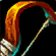
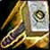
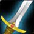
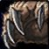
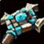

Tier lists niveau 60
Quelles spécialisations dominent au niveau 60 ? Quatre classements : dégâts, tanks, soigneurs et JcJ. Clique sur une spé pour voir son build, ses statistiques et ses races conseillées.
📅 Mise à jour le 23 novembre 2026🛠 Patch 1.60.1.71037
Dégâts en donjon et en raid
📅 Créée le 23 novembre 2026🛠 Patch 1.60.1.71037Fiabilité : moyenne
Une lettre par spécialisation de dégâts, pour les donjons du niveau 60 et les raids qui ouvrent le 9 décembre. Les tanks et les soigneurs ont leur propre liste.

SurvieChasseurLe chasseur le mieux classé depuis la sortie : ses talents clés tiennent leurs promesses au niveau 60.
- DémonologieDémoniste
La grande surprise : donné en bas pendant la bêta, il est en tête depuis la sortie.
- DestructionDémoniste
Conflagration et Incinérer : de gros dégâts, à condition de ne pas trop bouger.

VindictePaladinSa nouvelle rotation paie au niveau 60, et la Spécialisation Arme 2M renforce tous ses dégâts Sacré depuis le 19 novembre.

FureurGuerrierLa spé de dégâts du guerrier, réparée le 16 novembre (Frappes téméraires, Rafale).
- PrécisionChasseur
Visée et Tir de sniper : de grosses rafales à distance.
 AméliorationChaman
AméliorationChamanReste en A malgré la baisse de Frappe-tempête du 17 novembre.
 FeuMage
FeuMageEnflammer et Combustion : solide au niveau 60.
- Maîtrise des bêtesChasseur
Le familier et Courroux bestial : la valeur sûre du chasseur.
- ArcanesMage
N'est plus seul en tête comme en bêta, mais reste un très bon choix.
- AfflictionDémoniste
Les dégâts sur la durée, un cran derrière les deux autres démonistes.
- ArmesGuerrier
Correct en JcE, derrière Fureur si seuls les dégâts comptent.

Combat faroucheDruideLe druide félin fait de bons dégâts en mêlée.
 CombatVoleur
CombatVoleurDéluge de lames pour les packs : le meilleur voleur en JcE.

OmbrePrêtreForme d'ombre et Tissage de l'ombre ; l'Étreinte vampirique soigne moins le groupe depuis le 16 novembre.
- FinesseVoleur
Pensé pour l'ouverture en JcJ plus que pour les longs combats.
- ÉquilibreDruide
Éclipse et aura de critique pour le groupe ; Blizzard veut améliorer son gameplay.
- AssassinatVoleur
Moins bien placé qu'en bêta : Combat fait mieux en JcE.
- GivreMage
Pas fait pour être en tête des dégâts, mais utile au raid.
- ÉlémentaireChaman
Le dernier des classements de dégâts au niveau 60 pour l'instant.
Sur quoi repose ce classement : Classement Wowhead du 19 novembre 2026 (relayé par JudgeHype), établi après la sortie, avec les premiers personnages niveau 60 et après la baisse du chaman Amélioration du 17 novembre. Les raids n'ont pas encore ouvert : il bougera sans doute quand ils seront là.
Tanks
📅 Créée le 23 novembre 2026🛠 Patch 1.60.1.71037Fiabilité : moyenne
Qui tient un donjon du niveau 60, et à qui confier les raids du 9 décembre. Trois spés peuvent tanker : c'est toute la liste.
- Combat faroucheDruide
En forme d'ours, le tank le mieux classé depuis la sortie : beaucoup de points de vie et d'armure.
- ProtectionGuerrier
Heurt de bouclier, Dernier rempart : un tank sûr pour tous les donjons.
- ProtectionPaladin
Excellent en donjon ; son ensemble Âmeforge passe à la puissance des sorts depuis le 17 novembre.
Sur quoi repose ce classement : Classement Wowhead du 19 novembre 2026 (relayé par JudgeHype), établi après la sortie, avec les premiers personnages niveau 60 et après la baisse du chaman Amélioration du 17 novembre. Les raids n'ont pas encore ouvert : il bougera sans doute quand ils seront là.
Soigneurs
📅 Créée le 23 novembre 2026🛠 Patch 1.60.1.71037Fiabilité : moyenne
Cinq soigneurs, une lettre chacun, pour les donjons du niveau 60 et les raids de décembre. Boucliers, soins sur une cible et soins de groupe sont trois métiers différents.
- RestaurationChaman
Salve de guérison et totems : le soigneur le mieux classé au niveau 60.
- RestaurationDruide
Croissance sauvage et Prompte guérison, très efficaces sur le groupe.
- SacréPrêtre
Prière de guérison quand les dégâts touchent tout le groupe.
- DisciplinePrêtre
Boucliers et Pénitence ; Blizzard étudie des changements pour la rendre plus unique.
- SacréPaladin
Bon sur une cible, mais en retard sur les soins de zone, Blizzard le reconnaît.
Sur quoi repose ce classement : Classement Wowhead du 19 novembre 2026 (relayé par JudgeHype), établi après la sortie, avec les premiers personnages niveau 60 et après la baisse du chaman Amélioration du 17 novembre. Les raids n'ont pas encore ouvert : il bougera sans doute quand ils seront là.
JcJ (champs de bataille et monde)
📅 Créée le 1er octobre 2026🛠 Patch 1.60.1.70124 (bêta)Fiabilité : faible
Champs de bataille et JcJ sauvage : pas d'arène ni de classement coté. Chaque spé est jugée sur son rôle réel : porter le drapeau, tenir une base, soigner ou tuer.
- Combat faroucheDruide
Le porteur de drapeau idéal : félin pour fuir, ours pour encaisser.
- GivreMage
Ralentit, gèle et se protège : il arrête les porteurs de drapeau.
- ArmesGuerrier
Frappe mortelle réduit les soins de 50 %.
- FinesseVoleur
Ouverture et disparition : gagne les cinq premières secondes.
- AssassinatVoleur
Aiguillon perfide et poisons difficiles à dissiper : tueur de soigneurs.
- AfflictionDémoniste
Ses sorts continuent d'agir même s'il est contrôlé, et Peur reste redoutable.
- Maîtrise des bêtesChasseur
Familier, étourdissement et portée : défend une base à distance.
- SurvieChasseur
Chasseur au corps à corps avec pièges : fort s'il arrive au contact.
- OmbrePrêtre
Silence, étourdissement et Fouet mental qui ralentit.
- DisciplinePrêtre
Bouclier et Pénitence : le soigneur qui fait gagner du temps.
- ÉlémentaireChaman
Éclairs et horions renforcés au lancement, une fois les talents profonds acquis.
- ProtectionPaladin
Tient une base grâce à Jugement qui provoque.
- ProtectionGuerrier
Coup traumatisant, Heurt de bouclier et Charge : garde la salle du drapeau.
- ArcanesMage
La fenêtre de dégâts la plus forte du mage.
- FureurGuerrier
Souhait mortel, mais pas de réduction des soins : Armes fait mieux.
- CombatVoleur
Sprint et Riposte, solide sans pouvoir se camoufler à nouveau.
- VindictePaladin
Des dégâts et une purification, sans être un vrai tueur.
- SacréPaladin
Beaucoup de bénédictions et de bons soins : soigneur de base.
- AméliorationChaman
Frappe-tempête, purge et interruption ; les totems meurent vite.
- RestaurationChaman
Remous et Loup fantôme instantané pour se replacer.
- DestructionDémoniste
Fort s'il peut rester immobile, sinon Affliction fait mieux.
- PrécisionChasseur
Grosses rafales, mais moins d'outils que Maîtrise des bêtes.
- SacréPrêtre
Prière de guérison sur une base, sans moyen de fuite.
- RestaurationDruide
Soins sur la durée, sans bouclier et avec moins de dissipations.
- FeuMage
Vague explosive qui étourdit, mais très fragile.
- ÉquilibreDruide
Ni ralentissement, ni silence, ni interruption : un vrai problème en champ de bataille.
- DémonologieDémoniste
Dépend trop du démon, et non testé au-delà du niveau 35.
Sur quoi repose ce classement : Projection au niveau 60 à partir des talents de la bêta et du verdict JcJ de chaque fiche. Rien n'a encore été joué au niveau 60.
Dégâts, tanks et soins : d'après les tier lists de Wowhead du 19 novembre 2026, relayées par JudgeHype. JcJ : d'après le projet Forever Meta (bêta, 1er octobre 2026). Explications rédigées par ForeverWoW. Les builds de chaque spé sont sur la page Guides de spé.